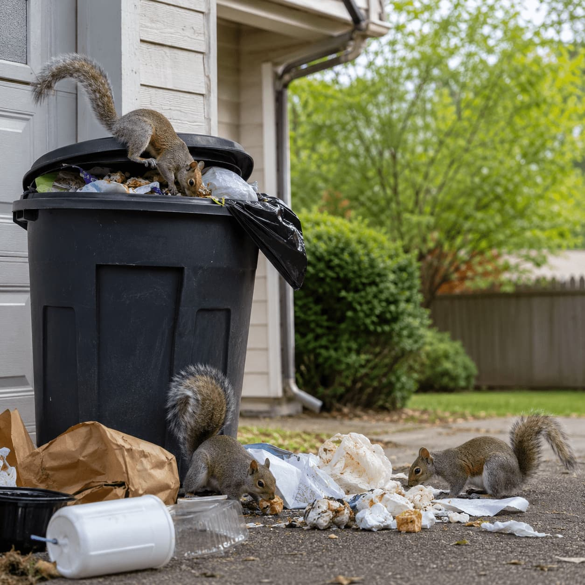

Start with the location
Compare providers based on crawl spaces, decks, sheds, garages, or yard structures.
Opossum & skunk provider comparison
Explore local provider options for crawl spaces, under-deck activity, yard structures, odors, and calm safety-aware service questions.
Ground-level activity
Opossum and skunk activity can involve crawl spaces, sheds, decks, garages, yard structures, odors, and ground-level entry points.
WILDGUARD helps homeowners compare local providers who list opossum, skunk, inspection, exclusion, and prevention-related service categories. The goal is to help you organize what to ask before choosing a provider.
Compare providers based on crawl spaces, decks, sheds, garages, or yard structures.
Review whether providers discuss odor sources, access points, and practical inspection steps.
Ground-level wildlife activity may connect to gaps, decks, crawl space openings, or yard access.
Common signs
These signs can help homeowners decide whether ground-level wildlife service categories are relevant.
Movement, odors, or disturbance near crawl space openings.
Repeated activity near decks, porches, sheds, or yard structures.
Persistent odors around exterior areas, garages, crawl spaces, or structures.
Openings near foundation edges, decks, steps, sheds, or crawl space doors.
Signs around soil, patios, garages, under decks, or near outdoor storage areas.
Wildlife returning to the same exterior areas, structures, or access points.
Comparison path
Use a calm, practical comparison path for ground-level wildlife concerns and prevention questions.
Note odors, sightings, movement, tracks, droppings, or structure access areas.
Review providers that list opossum, skunk, inspection, and exclusion categories.
Ask whether crawl spaces, decks, garages, sheds, and foundation areas can be reviewed.
Compare exclusion, barrier, sealing, or prevention-related provider options.

Safety and prevention
Opossum and skunk concerns are often connected to ground-level areas where animals can shelter or move through. Comparing inspection and prevention questions can make provider conversations easier.
Review crawl spaces, foundation gaps, decks, sheds, and garages.
Ask how providers discuss odors, sightings, and safety-aware inspection details.
Compare exclusion, sealing, barrier, and prevention-focused provider options.
Opossum & skunk FAQ
Helpful questions to consider when comparing local ground-level wildlife provider options.
Common signs include odors, movement near decks or sheds, crawl space activity, droppings, tracks, or repeated activity around yard structures.
Yes. Crawl spaces and ground-level gaps are important areas to discuss when comparing providers for opossum or skunk-related activity.
Prevention questions can help homeowners compare whether providers address openings, attractants, barriers, or access paths around the property.
No. WILDGUARD is an independent comparison platform that helps homeowners explore provider options. Providers are independent companies.
Compare options
Start with the activity or odor concern you are noticing and compare local provider options for inspection, removal categories, exclusion, and prevention questions.